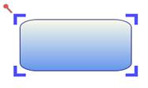

This feature provides different styles for Resize Handler. This enables you to customize the look and feel of the eight resize handlers.
Use Case Scenarios
Customizing the appearance of the Resizer Handler is made easy in Resize Handler customization. You can customize it by applying different styles to the Thumb.
Creating Custom Style for Resize Handle
The Resize Handler consists of eight Thumb. You can set different styles to a Thumb using the Resize Handler Properties.
Follow the below steps to create custom styles for Resize Handler.
Step1: Creating Style for Thumb
Prepare styles with template for each thumb.
· Through XAML
The following code illustrates how to create a style for Thumb.
|
[XAML]
<Style x:Key="TopLeftCornerResizerThump" TargetType="Thumb"> <Setter Property="IsTabStop" Value="false"/> <Setter Property="Background" Value="LightBlue"/> <Setter Property="Height" Value="8"/> <Setter Property="Width" Value="8"/> <Setter Property="Cursor" Value="SizeNWSE"/> <Setter Property="Margin" Value="-5 -5 0 0"/> <Setter Property="VerticalAlignment" Value="Top"/> <Setter Property="HorizontalAlignment" Value="Left"/> <Setter Property="Template"> <Setter.Value> <ControlTemplate TargetType="Thumb"> <Grid > <Rectangle HorizontalAlignment="Stretch" Height="5" Stroke="Blue" Fill="Blue" VerticalAlignment="{TemplateBinding VerticalAlignment}" StrokeThickness="2" Cursor="{TemplateBinding Cursor}" StrokeDashCap="Flat" StrokeStartLineCap="Round" x:Name="PART_ReseizerThumb3" Margin="{TemplateBinding Margin}" /> <Rectangle HorizontalAlignment="{TemplateBinding HorizontalAlignment}" Width="5" VerticalAlignment="Stretch" Cursor="{TemplateBinding Cursor}" Stroke="Blue" Fill="Blue" x:Name="PART_ReseizerThumb2" StrokeDashCap="Flat" StrokeStartLineCap="Round"
Margin="{TemplateBinding Margin}" StrokeThickness="2" /> </Grid> |
Step2: Assign the Style to Node
· Through XAML
The following code illustrates how to assign the Resize Handler Style to Node.
|
[XAML]
<Style TargetType="syncfusion:Node"> <Setter Property="TopResizer" Value="{StaticResource TopResizerThump}"/> <Setter Property="LeftResizer" Value="{StaticResource LeftResizerThump}"/> <Setter Property="RightResizer" Value="{StaticResource RightResizerThump}"/> <Setter Property="BottomResizer" Value="{StaticResource BottomResizerThump}"/> <Setter Property="TopLeftCornerResizer" Value="{StaticResource TopLeftCornerResizerThump}"/> <Setter Property="TopRightCornerResizer" Value="{StaticResource TopRightCornerResizerThump}"/> <Setter Property="BottomLeftCornerResizer" Value="{StaticResource BottomLeftCornerResizerThump}"/> <Setter Property="BottomRightCornerResizer" Value="{StaticResource BottomRightCornerResizerThump}"/> </Style> |
· Through Code behind
The following code illustrates how to assign the Resize Handler Style to Node.
|
[C#]
Node n = shape as Node; n.TopResizer = this.Resources["TopResizerThump"] as Style; n.LeftResizer =this.Resources["LeftResizerThump"] as Style; n.RightResizer =this.Resources["RightResizerThump"] as Style; n.BottomResizer =this.Resources["BottomResizerThump"] as Style; n.TopLeftCornerResizer =this.Resources["TopLeftCornerResizerThump"] as Style; n.TopRightCornerResizer =this.Resources["TopRightCornerResizerThump"] as Style; n.BottomLeftCornerResizer =this.Resources["BottomLeftCornerResizerThump"] as Style; n.BottomRightCornerResizer =this.Resources["BottomRightCornerResizerThump"] as Style; |
|
[VB]
Dim n As Node = TryCast(Shape, Node) n.TopResizer = TryCast(Me.Resources("TopResizerThump"), Style) n.LeftResizer =TryCast(Me.Resources("LeftResizerThump"), Style) n.RightResizer =TryCast(Me.Resources("RightResizerThump"), Style) n.BottomResizer =TryCast(Me.Resources("BottomResizerThump"), Style) n.TopLeftCornerResizer =TryCast(Me.Resources("TopLeftCornerResizerThump"), Style) n.TopRightCornerResizer =TryCast(Me.Resources("TopRightCornerResizerThump"), Style) n.BottomLeftCornerResizer =TryCast(Me.Resources("BottomLeftCornerResizerThump"), Style) n.BottomRightCornerResizer =TryCast(Me.Resources("BottomRightCornerResizerThump"), Style) |
Setting Thumb Template as Null
Set the Thumb Template value to Null to set a particular Thumb invisible.
The following code illustrates how to set the Thumb Style to Null.
|
[XAML]
<Style x:Key="TopResizerThump" TargetType="Thumb"> <Setter Property="Template" Value="{x:Null}"> </Setter> </Style> |
Following screenshot illustrates customized resize handlers with four corners.

Figure 45:Custom Style
Tables for Properties, Methods, and Events
Properties
Table 2 Resize Handler Property/ies Table
|
Property |
Description |
Type |
Data Type |
Reference links |
|
TopResizer |
Gets or sets a value of TopResizer Style for Resize Handler |
Dependency property |
Style |
NA |
|
BottomResizer |
Gets or sets a value of BottomResizer Style for Resize Handler |
Dependency property |
Style |
NA |
|
LeftResizer |
Gets or sets a value of LeftResizer Style for Resize Handler |
Dependency property |
Style |
NA |
|
RightResizer |
Gets or sets a value of RightResizer Style for Resize Handler |
Dependency property |
Style |
NA |
|
TopLeftResizer |
Gets or sets a value of TopLeftResizer Style for Resize Handler |
Dependency property |
Style |
NA |
|
TopRightResizer |
Gets or sets a value of TopRightResizer Style for Resize Handler |
Dependency property |
Style |
NA |
|
BottomLeftResizer |
Gets or sets a value of BottomLeftResizer Style for Resize Handler |
Dependency property |
Style |
NA |
|
BottomRightResizer |
Gets or sets a value of BottomRightResizer Style for Resize Handle |
Dependency property |
Style |
NA |
Sample Link
To view sample:
1. Open the Silverlight sample browser from the dashboard.
2. Navigate to Silverlight Diagram -> Editable Diagram->ResizerCustomization Demo.